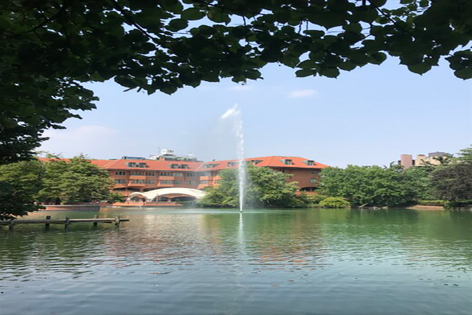
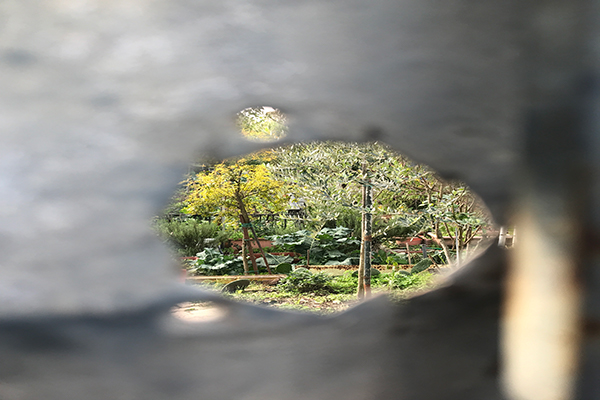

Lo spaccio dei poli
C'era una volta
Oggi è un giorno arido. Il sole appiattisce ogni forma, la proietta sull'asfalto. Evidenzia i tratti e li imprime nella memoria con una lucidità surreale. Camminiamo uno accanto all'altro, ma assolutamente distanti, senza dire una parola.
data
Nome autore

La roccaforte di Milano
In Cammino
Via Romualdo Bonfadini. Lungo la strada si affacciano condomini di cemento e villette nascoste dalle siepi. Poco più avanti un enorme prato chiuso da una recinzione arrugginita: lavori in corso. Qui i lavori ci sono sempre stati.
data
Nome autore